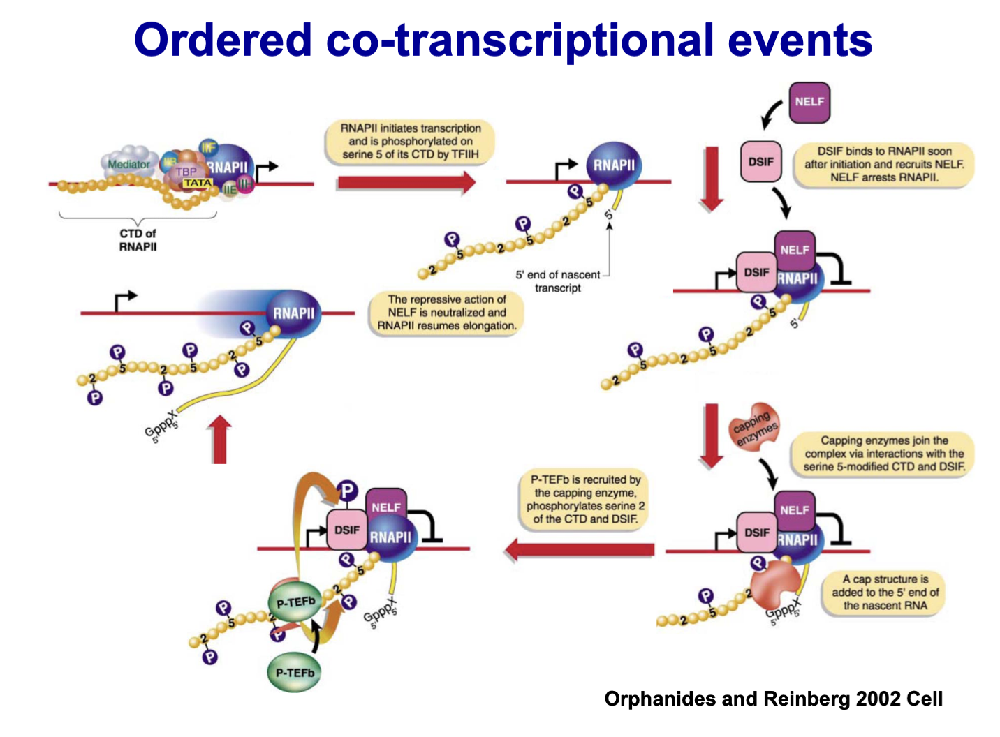

From one genome to hundreds of transcriptomes
在本科学习的分子生物学转录过程基础之上介入表观遗传学，对转录的过程更进一步的理解。
转录功能元件与相关蛋白
RNA Pol II
其中最大亚基的C端存在YSPTSPS的结构域(CTD)
Promoter
Core promoter elements:
- TATA Box: TATA box defines accurate transcription in vivo and in vitro (哺乳动物20%的基因不包含TATA Box，是consensus序列）
- Initiator: Initiator (lnr) is important for transcription control
- DPE (Downstream Promoter Element): Downstream core promoter element
Enhancer
增强子可以是双向的，与specific DNA binding proteins结合 (including activator)，决定基因的时空特异性表达（组织特异性）
Generalized Transcription Factors (GTFs)
真核生物主要的GTFs
- TBP (TATA Binding Protein): 唯一一个能参与结合RNA Pol I II III 的GTFs
- TFIID: TBP + 10 TAFs (TBP Associtated Factors), Binding DPE and TATA Box
GTFs通过与各类蛋白结合形成complex发挥作用
Activator: sequence specific TFs
Function
作为特异性转录因子，决定基因的特异表达，对于决定一批基因表达的activator，称为master activator
Components
- DNA-binding domain: DNA binding domain determines the target gene specificity
- Transcription activating domain: Transcription activating domain recruits transcription machinery and co-activators
Functioning
在不同条件被激活，进而招募transcription machinery或者co-activator
甾醇类激素受作为activator
Co-activator
染色质是由核小体构成，而核小体是由DNA缠绕在组蛋白上形成，只有开放的染色质结构区域才有发生转录的可能性，当染色质结构不开放时，上述提及的很多过程将无法发挥作用：
- activator将无法绑定DNA elements
- GTFs无法绑定DNA elements
- activator + Pol II + GTFs形成的PIC启动转录的过程只能作用于裸露的DNA，而不是染色质
- Elongation Pol II stalls at the first nucleosome it encounters
因此，Co-activator的存在才能保证转录的发生
Functioning
Co-activator不是DNA sequence specific binding protein，而是被activaor招募行使功能，可分为chrmotain co-activator和meditator
Chromation co-activators
Histione Ser acetylation
- 乙酰化修饰无位点专一性，体内半衰期5-10min
- 组蛋白尾巴带正电，DNA带负电，因此二者紧密结合，维护核小体结构
- 乙酰基则会中和组蛋白尾巴电荷，从而打开核小体结构
Typical co-activators
- GCN5（组蛋白乙酰化酶）
- ATP-dependent chromatin remodelers (ATP依赖染色质重塑因子)
Mediator
Mediator complex is a multi-subunit protein complex interacts with Pol II and many other factors
Function
- Mediator is crucial for activator-dependent transcription
- Mediator stabilizes the PIC complex
Summary
cis-elements被TFs（GTF、activator）识别，TFs进一步招募Transcription machinery/Co-activator
转录过程
Pre-initiation Complex (PIC) Assembly
涉及到的GTFs：TFIIA, B, D, E, F
- TFIID识别TATA Box
- TFIIB结合至TFIID-promoter复合物
- 复合物招募TFIIF和RNA Pol II复合物
- TFIIE、TFIIH结合至复合物
- TFlIA can join at any step after TFIID binding for stabilizing the preinitiation complex
- TFIIE招募TFIIH，PIC形成完毕
- TFIIEE/TFIIHE/TFIIH melts promoter
Promoter Clearance（启动子逃逸）
TFIIH介导DNA Pol II CTD磷酸化（其中还需要mediator参与），对启动子逃逸起着关键作用
Enlongation
CTD Ser2 phosphorylation is a hallmark of elongating Pol II
RNA Processing中的共转录事件
纠正本科分子生物学观念，RNA修饰并非整个转录本生成后发生，而是边转路边加工


共转录事件中的组蛋白修饰
乙酰化上文已经提及，而甲基化更多作为一种被识别的信号，被其它蛋白所识别
一道思考题出发的总结
TFIID能够识别H3K4me3来帮助其对启动子的识别，H3K4me3的甲基化酶是由RNA聚合酶II下游的因子招募到启动子的。然而，TFIID又是RNA聚合酶II全酶中最先识别启动子元件的因子。请阐述一下这些事件的上下游关系，以及可能的意义。
我的猜测1：H3K4me3的表观遗传信息是从原代细胞遗传而来的，也就说明这是细胞特异性的表观基因组信息，也就意味着特异性的H3K4me3，从而TFIID能够识别特定区域H3K4me3信号，保证该区域下游的基因表达
我的猜测2：下游的H3K4me3能促进上游的TFIID与启动子的结合，能保持H3K4me3的稳定周转，相当于保证了转录起始位点附近一定有甲基化标志，转录因子能正确结合，转录也能从近似相同位点开始。这样就保证题目里说的转录起始位点的正确性，也能保证甲基化位点和水平的稳定，遗传信息能相对稳定地遗传。
我的猜测3：第一次TFIID识别TATA（猜测TATA的开放与组蛋白乙酰化与enahncer有关），然后PIC，然后磷酸化CTD Ser5，然后招募Set1就甲基化了H3K4形成me3，然后就留下了的me3印记，再转录的时候因为me3印迹的关系TFIID就更容易识别TATA